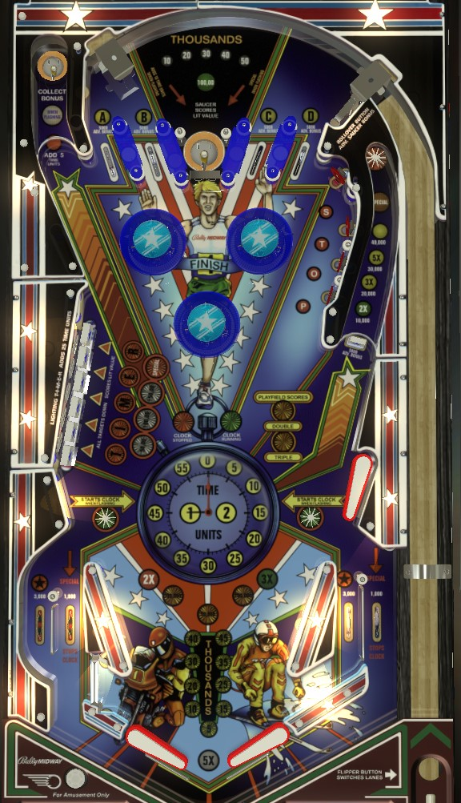

Not to be confused with Beat the Clock (Williams, EM, 1963).
Beat the Clock is a timed game with unlimited balls until you drain with no time left. Additional time is given by making the top saucer when lit after shooting the right orbit, making the left saucer, making both in lanes, or completing the Timer standup targets behind the left drops. The clock is stopped by the out lanes or completing the Stop standups in the upper right. Bonus is increased by top lanes, in lanes, and drop targets. Bonus multiplier is increased by right orbit. Top left saucer is the only way to collect bonus, and is very valuable. Completing top lanes increases playfield multiplier. Draining loses bonus and playfield X.
On Beat the Clock, each player only gets one turn; in each turn, you get unlimited balls until time expires, and if you drain with no time on the clock, your game is over. Time is counted in Time Units, as shown on the playfield; by default, one Time Unit is pretty close to one second, but operator settings can make the timer count down slower or faster. (Throughout the guide, I call Time Units "seconds" for clarity.) A game can start with anywhere from 1:15 to 3:00 on the clock in multiples of 15 seconds, which is another operator setting. The maximum amount of time that can be banked is 3:55.
There are 4 ways to add time to the clock:
There are 2 ways to stop the clock:
If the clock is stopped while the ball is on the playfield, the clock will only start again if the ball rolls over a flashing lower left or lower right star rollover. If the clock is stopped while the ball is in the shooter lane, the clock will restart when any scoring switch is triggered. The game can also start the clock automatically if the ball sits in the shooter lane for more than 15 seconds (this is a setting that can be enabled or disabled).
When the ball drains with time still on the clock, you get a new ball and continue playing, but certain scoring features reset- these are mentioned throughout the rest of the guide where applicable. The bonus count shown on the playfield is not collected when you drain; this bonus can only be scored at the top left saucer. If you tilt, the clock will be started if it is not already running; the tilt penalty is 10 seconds of time, plus whatever time it takes for the ball to leave the playfield. The game's voice announces when you have 50, 40, 30, 20, 10, 5, and 0 seconds left. The game ends when the ball enters the out hole with 0 time on the clock.
Each of the A-B-C-D top lanes scores 5,000 points and a bonus advance. Roll through a lit lane to unlight it. Lane change is available on the right flipper only for rotating which lanes are lit. Unlighting A-B-C-D resets the sequence; the first completion awards 2x playfield, the second completion awards 3x playfield, the third completion lights one out lane for Special alternating on bumper or slingshot hits, and the fourth completion lights both out lanes for Special. All awards from A-B-C-D completions, including earned playfield multipliers and lit Specials, is reset when the ball drains.
The four standup targets in the upper left correspond to the letters in Stop. In general, only the S can be shot from the flippers, and the other letters require nudging and pop bumper luck to score. Flashing targets score 1,000 points and a bonus advance. Unlit targets score 1,000 points, but no bonus. Hit a flashing target to unlight it. Lane change on the right flipper rotates which Stop target(s) are flashing, though this is a setting that can be disabled. Unlighting all 4 targets resets them and stops the clock.
The drop target in front of the right orbit scores 5,000 points. Whenever the right drop target is down, the top saucer is lit for 10 additional seconds of time. The drop target resets when the top center saucer or any A-B-C-D top lane is triggered.
The first shot to the right orbit on a ball scores 2x bonus and 10,000 points; the second scores 3x bonus and 20,000 points; the third scores 5x bonus and 30,000 points; the fourth scores a Special and 40,000 points; the right orbit scores a flat 40,000 points thereafter. This scoring sequence and the earned bonus multipliers associated with it are reset every time the ball drains.
The top saucer value starts at 10,000 points. Any shot to the right orbit increases the top saucer value by 10,000, up to a maximum value of 190,000 points (I think). This value is carried over throughout the game. Game settings allow the top saucer to be lit for a Special at any value level from 30,000 to 100,000 points.
Each drop target down scores 3,000 points and a bonus advance. Completing the drop target bank scores and advances the lit value, which starts at 50,000 points and increases by 50,000 at a time up to a maximum of 300,000 points. Depending on game settings, completing the drop targets will also score a Special when the drop target completion value is 100,000, 150,000, 200,000, or 250,000 points. Completing the drop targets causes the letters in Timer to start flashing. The standup targets behind the drops each score 3,000 points; hit a flashing target to light it solidly. Solidly lighting all letters in the word Timer resets the drop targets and adds 25 seconds to clock.
The bonus count is displayed on the playfield. Bonus is advanced by the A-B-C-D top lanes, flashing Stop standup targets, any left drop target, and the in/out lanes. Each bonus advance adds 5,000 points to the base bonus. Base bonus maxes out at 395,000 points. Bonus multipliers are earned by shooting the right orbit after knocking down the single right drop target. The displayed bonus is not awarded when the ball drains: the only way to score the bonus is by shooting the Collect Bonus saucer in the very back left of the game. A game setting determines whether collecting the bonus will reset the base bonus or not; if it does not, then this saucer is a repeatable shot worth up to 5x 395,000 = 1,975,000 points each time. When the ball drains, you lose your bonus multipliers, but your base bonus is carried over. The collect bonus saucer is a long, tight shot, but being able to make it with consistency is paramount to a high score.
The bonus collect saucer can also be lit for Add 5 Time Units. This can either be always lit, or set up so that only every 2nd shot to the saucer awards the 5 extra seconds. Be mindful of the center drain risk on the kickout from the collect bonus saucer.
Beat the Clock has a conventional in/out lane setup, but with the positions of the in and out lanes on the left reversed, with the in lane being closer to the edge of the table. In lanes score 3,000 points and collect a Star when lit; collect both stars to relight them and earn 5 or 10 additional seconds of time, depending on game settings. Out lanes score 1,000 points, stop the clock, and can be lit for Special by completing the A-B-C-D lanes additional times after earning 3x playfield multiplier. The reversed in lane setup on the left is more important than most games, because if the ball goes down the out lane but is nudged back into play at the lane intersection, that still stops the game's clock while keeping the ball in play.